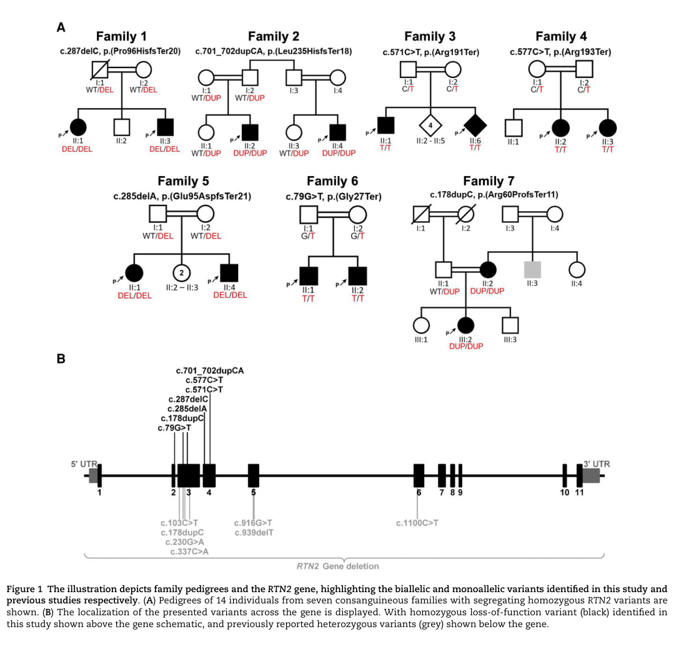

Autosomal recessive distal hereditary motor neuronopathy (dHMN; also called autosomal recessive distal spinal muscular atrophy, dSMA) is a clinically and genetically heterogeneous group of inherited lower motor neuron disorders characterized by slowly progressive, length-dependent distal muscle weakness and atrophy with minimal or absent sensory involvement. Neurophysiology shows chronic neurogenic denervation on EMG with motor axonal involvement and preserved sensory responses, distinguishing dHMN from axonal Charcot-Marie-Tooth disease (CMT2). The autosomal recessive forms are caused by biallelic mutations in genes affecting motor-neuron and distal-axon biology, including IGHMBP2 (HMNR1 / SMARD1), SIGMAR1 (HMNR2, allelic to ALS16), and PLEKHG5 (HMNR4); the recently described RTN2 deficiency adds an autosomal recessive distal motor neuropathy with lower-limb spasticity. Many cases (>60% of HMN overall) remain genetically unsolved, motivating broader genomic testing including for repeat expansions and structural variants.
Ask a research question about Distal Hereditary Motor Neuronopathy, Autosomal Recessive. OpenScientist will conduct autonomous deep research using the Disorder Mechanisms Knowledge Base and PubMed literature (typically 10-30 minutes).
Do not include personal health information in your question. Questions and results are cached in your browser's local storage.
name: Distal Hereditary Motor Neuronopathy, Autosomal Recessive
creation_date: "2026-06-17T00:00:00Z"
category: Genetic
description: >
Autosomal recessive distal hereditary motor neuronopathy (dHMN; also called
autosomal recessive distal spinal muscular atrophy, dSMA) is a clinically and
genetically heterogeneous group of inherited lower motor neuron disorders
characterized by slowly progressive, length-dependent distal muscle weakness
and atrophy with minimal or absent sensory involvement. Neurophysiology shows
chronic neurogenic denervation on EMG with motor axonal involvement and
preserved sensory responses, distinguishing dHMN from axonal Charcot-Marie-Tooth
disease (CMT2). The autosomal recessive forms are caused by biallelic mutations
in genes affecting motor-neuron and distal-axon biology, including IGHMBP2
(HMNR1 / SMARD1), SIGMAR1 (HMNR2, allelic to ALS16), and PLEKHG5 (HMNR4); the
recently described RTN2 deficiency adds an autosomal recessive distal motor
neuropathy with lower-limb spasticity. Many cases (>60% of HMN overall) remain
genetically unsolved, motivating broader genomic testing including for repeat
expansions and structural variants.
disease_term:
preferred_term: autosomal recessive distal hereditary motor neuropathy
term:
id: MONDO:0015363
label: neuronopathy, distal hereditary motor, autosomal recessive
parents:
- distal hereditary motor neuropathy
references:
- reference: PMID:36445400
title: "Early onset hereditary neuronopathies: an update on non-5q motor neuron diseases."
has_subtypes:
- name: dSMA1
display_name: dSMA1 / SMARD1 (IGHMBP2-related, HMNR1)
description: >
Spinal muscular atrophy with respiratory distress type 1 (SMARD1; HMNR1),
caused by biallelic mutations in IGHMBP2. Presents in infancy with
diaphragmatic paralysis and respiratory failure plus distal muscle weakness,
due to progressive degeneration of alpha motor neurons. Allelic to CMT2S.
evidence:
- reference: PMID:39202358
reference_title: "The Clinical Heterogeneity of Spinal Muscular Atrophy with Respiratory Distress Type 1 (SMARD1)-A Report of Three Cases, Including Twins."
supports: SUPPORT
evidence_source: HUMAN_CLINICAL
snippet: "Spinal muscular atrophy with respiratory distress type 1 (SMARD1; OMIM #604320, ORPHA:98920) is a rare autosomal recessive congenital motor neuron disease. It is caused by variants in the IGHMBP2 gene."
explanation: Establishes biallelic IGHMBP2 variants as the cause of SMARD1/dSMA1.
- name: dSMA2
display_name: dSMA2 (SIGMAR1-related, HMNR2)
description: >
Autosomal recessive distal hereditary motor neuropathy (HMNR2) caused by
biallelic SIGMAR1 mutations, with childhood-onset distal weakness and
atrophy and a pure chronic motor peripheral nerve involvement. SIGMAR1
encodes an endoplasmic reticulum chaperone; the gene is allelic to juvenile
ALS16.
evidence:
- reference: PMID:30079398
reference_title: "SIGMAR1 gene mutation causing Distal Hereditary Motor Neuropathy in a Portuguese family."
supports: SUPPORT
evidence_source: HUMAN_CLINICAL
snippet: "Alterations of its normal function may contribute to two different phenotypes: juvenile amyotrophic lateral sclerosis (ALS 16) and distal hereditary motor neuropathies (dHMN)."
explanation: Establishes biallelic SIGMAR1 mutation as a cause of dHMN (HMNR2).
- name: dSMA4
display_name: dSMA4 (PLEKHG5-related, HMNR4)
description: >
Autosomal recessive distal spinal muscular atrophy / distal hereditary motor
neuropathy (HMNR4) caused by biallelic PLEKHG5 mutations, a RhoGEF expressed
in motor neurons; the gene overlaps with recessive intermediate CMT.
evidence:
- reference: PMID:21902652
reference_title: "Molecular genetics and mechanisms of disease in distal hereditary motor neuropathies: insights directing future genetic studies."
supports: SUPPORT
evidence_source: OTHER
snippet: "The mutated genes identified to-date in dHMN include HSPB1, HSPB8, HSPB3, DCTN1, GARS, PLEKHG5, BSCL2, SETX, IGHMBP2, ATP7A and"
explanation: Lists PLEKHG5 (and IGHMBP2) among established dHMN-causing genes.
- name: dSMA-RTN2
display_name: RTN2-related AR dHMN with lower-limb spasticity
description: >
Autosomal recessive distal motor neuropathy with lower-limb spasticity caused
by biallelic loss-of-function variants in RTN2, an endoplasmic reticulum
membrane-shaping protein, with a mechanistic link to ER/calcium handling.
evidence:
- reference: PMID:38527963
reference_title: "RTN2 deficiency results in an autosomal recessive distal motor neuropathy with lower limb spasticity."
supports: SUPPORT
evidence_source: HUMAN_CLINICAL
snippet: "RTN2 deficiency results in an autosomal recessive distal motor neuropathy with lower limb spasticity."
explanation: Establishes biallelic RTN2 loss of function as a cause of AR distal motor neuropathy.
pathophysiology:
- name: Motor Neuron and Distal Axon Gene Defect
description: >
Biallelic loss-of-function or hypomorphic mutations in motor-neuron and
distal-axon genes (IGHMBP2 RNA helicase, SIGMAR1 and RTN2 endoplasmic
reticulum proteins, PLEKHG5 RhoGEF) impair the homeostatic functions that
lower motor neurons require to maintain their long peripheral axons.
cell_types:
- preferred_term: motor neuron
term:
id: CL:0000100
label: motor neuron
biological_processes:
- preferred_term: Endoplasmic reticulum organization
term:
id: GO:0007029
label: endoplasmic reticulum organization
modifier: DECREASED
evidence:
- reference: PMID:38527963
reference_title: "RTN2 deficiency results in an autosomal recessive distal motor neuropathy with lower limb spasticity."
supports: SUPPORT
evidence_source: HUMAN_CLINICAL
snippet: "RTN2 deficiency results in an autosomal recessive distal motor neuropathy with lower limb spasticity."
explanation: RTN2 loss of function (an ER membrane-shaping protein) is one motor-neuron gene defect initiating the disorder.
downstream:
- target: Length-Dependent Distal Motor Axonopathy
description: >
Defective motor-neuron gene function preferentially compromises the longest
peripheral motor axons, producing a length-dependent distal motor axonopathy.
causal_link_type: DIRECT
- name: Length-Dependent Distal Motor Axonopathy
description: >
Progressive degeneration of the distal portions of the longest motor axons
with chronic motor denervation, manifest as neurogenic changes on EMG and a
motor axonal pattern on nerve conduction studies with preserved sensory
responses.
conforms_to: "peripheral_axonal_degeneration#Distal Axonal Degeneration and Demyelination"
cell_types:
- preferred_term: motor neuron
term:
id: CL:0000100
label: motor neuron
biological_processes:
- preferred_term: Retrograde axonal transport
term:
id: GO:0008090
label: retrograde axonal transport
modifier: DECREASED
evidence:
- reference: PMID:34819907
reference_title: "Clinical and Genetic Features of Biallelic Mutations in SORD in a Series of Chinese Patients With Charcot-Marie-Tooth and Distal Hereditary Motor Neuropathy."
supports: SUPPORT
evidence_source: HUMAN_CLINICAL
snippet: "All patients presented with distal weakness and atrophy in the lower limb, two of whom had minor clinical sensory abnormalities and small fiber neuropathy."
explanation: Documents the motor-predominant, distal, length-dependent axonopathy with relative sensory sparing.
downstream:
- target: Distal Muscle Weakness and Wasting
description: >
Chronic motor denervation of distal muscles produces progressive distal
weakness and atrophy, beginning in the lower limbs.
causal_link_type: DIRECT
- name: Distal Muscle Weakness and Wasting
description: >
Clinically evident distal limb weakness and muscle atrophy, typically
beginning in the feet and lower legs with foot drop and pes cavus, without
prominent sensory loss; in severe infantile (SMARD1) forms, diaphragmatic and
respiratory muscle involvement dominate.
evidence:
- reference: PMID:30079398
reference_title: "SIGMAR1 gene mutation causing Distal Hereditary Motor Neuropathy in a Portuguese family."
supports: SUPPORT
evidence_source: HUMAN_CLINICAL
snippet: "Neurological examination revealed a symmetrical severe muscle wasting and weakness in distal lower and upper limbs, with claw hands, footdrop with equinovarus deformity and hammer toes, generalized areflexia and normal sensory examination."
explanation: Describes the distal weakness/wasting endpoint with areflexia and normal sensation.
downstream:
- target: Diaphragmatic and Respiratory Muscle Weakness
description: >
In IGHMBP2-related SMARD1, motor neuron degeneration extends to the phrenic
motor neurons, producing diaphragmatic paralysis and respiratory failure.
causal_link_type: DIRECT
- name: Diaphragmatic and Respiratory Muscle Weakness
description: >
In the severe infantile SMARD1 (IGHMBP2) subtype, degeneration of phrenic and
respiratory motor neurons causes diaphragmatic paralysis and progressive
respiratory failure, the leading cause of early mortality.
evidence:
- reference: PMID:35611426
reference_title: "Spinal muscular atrophy with respiratory distress type 1 (SMARD1): a rare cause of hypotonia, diaphragmatic weakness, and respiratory failure in infants."
supports: SUPPORT
evidence_source: HUMAN_CLINICAL
snippet: "The initial symptoms of patients with SMARD1 are respiratory distress and distal muscle weakness manifesting in the infantile period due to progressive degeneration of α-motor neurons."
explanation: Links phrenic/respiratory motor neuron degeneration to diaphragmatic weakness and respiratory failure in SMARD1.
phenotypes:
- category: Phenotypic
name: Distal muscle weakness
description: Progressive weakness of distal limb muscles, typically beginning in the lower limbs.
phenotype_term:
preferred_term: Distal muscle weakness
term:
id: HP:0002460
label: Distal muscle weakness
clinical_course: PROGRESSIVE
evidence:
- reference: PMID:36445400
reference_title: "Early onset hereditary neuronopathies: an update on non-5q motor neuron diseases."
supports: SUPPORT
evidence_source: HUMAN_CLINICAL
snippet: "Hereditary motor neuropathies (HMN) were first defined as a group of neuromuscular disorders characterized by lower motor neuron dysfunction, slowly progressive length-dependent distal muscle weakness and atrophy, without sensory involvement."
explanation: Defines distal muscle weakness as the core feature of HMN/dHMN.
- category: Phenotypic
name: Distal amyotrophy
description: Wasting of distal limb muscles.
phenotype_term:
preferred_term: Distal amyotrophy
term:
id: HP:0003693
label: Distal amyotrophy
evidence:
- reference: PMID:36445400
reference_title: "Early onset hereditary neuronopathies: an update on non-5q motor neuron diseases."
supports: SUPPORT
evidence_source: HUMAN_CLINICAL
snippet: "slowly progressive length-dependent distal muscle weakness and atrophy, without sensory involvement"
explanation: Distal atrophy accompanies the weakness in HMN/dHMN.
- category: Phenotypic
name: Motor axonal neuropathy
description: Pure motor axonal involvement on nerve conduction studies with preserved sensory responses.
phenotype_term:
preferred_term: Motor axonal neuropathy
term:
id: HP:0007002
label: Motor axonal neuropathy
evidence:
- reference: PMID:30079398
reference_title: "SIGMAR1 gene mutation causing Distal Hereditary Motor Neuropathy in a Portuguese family."
supports: SUPPORT
evidence_source: HUMAN_CLINICAL
snippet: "The electrodiagnostic study revealed a pure chronic motor peripheral nerve involvement without signs of demyelination."
explanation: Documents the motor axonal electrophysiology defining dHMN.
- category: Phenotypic
name: Areflexia
description: Reduced or absent deep tendon reflexes.
phenotype_term:
preferred_term: Areflexia
term:
id: HP:0001284
label: Areflexia
evidence:
- reference: PMID:30079398
reference_title: "SIGMAR1 gene mutation causing Distal Hereditary Motor Neuropathy in a Portuguese family."
supports: SUPPORT
evidence_source: HUMAN_CLINICAL
snippet: "with claw hands, footdrop with equinovarus deformity and hammer toes, generalized areflexia and normal sensory examination"
explanation: Generalized areflexia is reported in SIGMAR1-related dHMN.
- category: Phenotypic
name: Foot dorsiflexor weakness
description: Weakness of foot dorsiflexion producing foot drop and steppage gait.
phenotype_term:
preferred_term: Foot drop
term:
id: HP:0009027
label: Foot dorsiflexor weakness
evidence:
- reference: PMID:30079398
reference_title: "SIGMAR1 gene mutation causing Distal Hereditary Motor Neuropathy in a Portuguese family."
supports: SUPPORT
evidence_source: HUMAN_CLINICAL
snippet: "with claw hands, footdrop with equinovarus deformity and hammer toes, generalized areflexia and normal sensory examination"
explanation: Foot drop with equinovarus deformity is documented in dHMN.
- category: Phenotypic
name: Diaphragmatic paralysis
description: Diaphragmatic weakness/paralysis, prominent in the infantile SMARD1 subtype.
subtype: dSMA1
phenotype_term:
preferred_term: Diaphragmatic paralysis
term:
id: HP:0006597
label: Diaphragmatic paralysis
evidence:
- reference: PMID:39202358
reference_title: "The Clinical Heterogeneity of Spinal Muscular Atrophy with Respiratory Distress Type 1 (SMARD1)-A Report of Three Cases, Including Twins."
supports: SUPPORT
evidence_source: HUMAN_CLINICAL
snippet: "it presents with respiratory failure due to diaphragmatic paralysis, progressive muscle weakness starting in the distal parts of the limbs, dysphagia, and damage to sensory and autonomic nerves"
explanation: Diaphragmatic paralysis is a defining feature of SMARD1.
- category: Phenotypic
name: Respiratory failure
description: Respiratory failure from diaphragmatic and respiratory muscle weakness in SMARD1.
subtype: dSMA1
phenotype_term:
preferred_term: Respiratory failure
term:
id: HP:0002878
label: Respiratory failure
evidence:
- reference: PMID:39202358
reference_title: "The Clinical Heterogeneity of Spinal Muscular Atrophy with Respiratory Distress Type 1 (SMARD1)-A Report of Three Cases, Including Twins."
supports: SUPPORT
evidence_source: HUMAN_CLINICAL
snippet: "Most children with SMARD1 do not survive beyond the first year of life due to progressive respiratory failure."
explanation: Respiratory failure is the leading cause of early mortality in SMARD1.
- category: Phenotypic
name: Lower limb spasticity
description: Lower-limb spasticity and hyperreflexia in the RTN2-related subtype, reflecting pyramidal involvement.
subtype: dSMA-RTN2
phenotype_term:
preferred_term: Spasticity
term:
id: HP:0001257
label: Spasticity
evidence:
- reference: PMID:38527963
reference_title: "RTN2 deficiency results in an autosomal recessive distal motor neuropathy with lower limb spasticity."
supports: SUPPORT
evidence_source: HUMAN_CLINICAL
snippet: "RTN2 deficiency results in an autosomal recessive distal motor neuropathy with lower limb spasticity."
explanation: Lower-limb spasticity distinguishes the RTN2-related subtype.
genetic:
- name: IGHMBP2
gene_term:
preferred_term: IGHMBP2
term:
id: hgnc:5542
label: IGHMBP2
inheritance:
- name: Autosomal Recessive
subtype: dSMA1
notes: >
Biallelic IGHMBP2 mutations cause SMARD1/dSMA1 (HMNR1); allelic to CMT2S.
evidence:
- reference: PMID:39202358
reference_title: "The Clinical Heterogeneity of Spinal Muscular Atrophy with Respiratory Distress Type 1 (SMARD1)-A Report of Three Cases, Including Twins."
supports: SUPPORT
evidence_source: HUMAN_CLINICAL
snippet: "It is caused by variants in the IGHMBP2 gene."
explanation: IGHMBP2 is the SMARD1 gene.
- name: SIGMAR1
gene_term:
preferred_term: SIGMAR1
term:
id: hgnc:8157
label: SIGMAR1
inheritance:
- name: Autosomal Recessive
subtype: dSMA2
notes: >
Biallelic SIGMAR1 mutations cause AR dHMN (HMNR2); allelic to juvenile ALS16.
evidence:
- reference: PMID:30079398
reference_title: "SIGMAR1 gene mutation causing Distal Hereditary Motor Neuropathy in a Portuguese family."
supports: SUPPORT
evidence_source: HUMAN_CLINICAL
snippet: "The molecular study found the deletion c.561_576del on exon 4 and a deletion of all exon 4, in the SIGMAR1 gene."
explanation: Biallelic SIGMAR1 deletions identified in a family with dHMN.
- name: PLEKHG5
gene_term:
preferred_term: PLEKHG5
term:
id: hgnc:29105
label: PLEKHG5
inheritance:
- name: Autosomal Recessive
subtype: dSMA4
notes: >
Biallelic PLEKHG5 mutations cause AR distal spinal muscular atrophy (HMNR4).
evidence:
- reference: PMID:21902652
reference_title: "Molecular genetics and mechanisms of disease in distal hereditary motor neuropathies: insights directing future genetic studies."
supports: SUPPORT
evidence_source: OTHER
snippet: "The mutated genes identified to-date in dHMN include HSPB1, HSPB8, HSPB3, DCTN1, GARS, PLEKHG5, BSCL2, SETX, IGHMBP2, ATP7A and"
explanation: PLEKHG5 is an established dHMN gene.
- name: RTN2
gene_term:
preferred_term: RTN2
term:
id: hgnc:10468
label: RTN2
inheritance:
- name: Autosomal Recessive
subtype: dSMA-RTN2
notes: >
Biallelic loss-of-function RTN2 variants cause AR distal motor neuropathy
with lower-limb spasticity.
evidence:
- reference: PMID:38527963
reference_title: "RTN2 deficiency results in an autosomal recessive distal motor neuropathy with lower limb spasticity."
supports: SUPPORT
evidence_source: HUMAN_CLINICAL
snippet: "RTN2 deficiency results in an autosomal recessive distal motor neuropathy with lower limb spasticity."
explanation: RTN2 loss of function causes this AR subtype.
- name: SORD
gene_term:
preferred_term: SORD
term:
id: hgnc:11184
label: SORD
inheritance:
- name: Autosomal Recessive
notes: >
Biallelic SORD loss-of-function variants are among the most frequent recessive
causes of axonal CMT2 / dHMN; recurrent c.757delG (p.A253Qfs*27).
evidence:
- reference: PMID:34819907
reference_title: "Clinical and Genetic Features of Biallelic Mutations in SORD in a Series of Chinese Patients With Charcot-Marie-Tooth and Distal Hereditary Motor Neuropathy."
supports: SUPPORT
evidence_source: HUMAN_CLINICAL
snippet: "Biallelic mutations in the sorbitol dehydrogenase (SORD) gene have recently been found to be one of the most frequent causes of autosomal recessive axonal Charcot-Marie-Tooth (CMT2) and distal hereditary motor neuropathy (dHMN)."
explanation: Establishes SORD as a frequent recessive cause of dHMN.
- name: MME
gene_term:
preferred_term: MME
term:
id: hgnc:7154
label: MME
inheritance:
- name: Autosomal Recessive
notes: >
Biallelic MME (neprilysin) variants cause autosomal recessive late-onset dHMN.
evidence:
- reference: PMID:39232784
reference_title: "A novel variant of biallelic MME gene associated with autosomal recessive late-onset distal hereditary motor neuropathy in Chinese families."
supports: SUPPORT
evidence_source: HUMAN_CLINICAL
snippet: "previous studies have reported that the compound heterozygous recessive MME variants cause dHMN"
explanation: Biallelic MME variants cause AR late-onset dHMN.
prevalence:
- population: general (pooled HMN estimate)
notes: >
Cumulative estimated prevalence of hereditary motor neuropathies is 2.14 per
100,000; a dHMN cohort study reported a minimum prevalence of 2.3 per 100,000.
evidence:
- reference: PMID:36445400
reference_title: "Early onset hereditary neuronopathies: an update on non-5q motor neuron diseases."
supports: SUPPORT
evidence_source: HUMAN_CLINICAL
snippet: "Their cumulative estimated prevalence is 2.14/100 000 and, to date, around 30 causative genes have been identified with autosomal dominant, recessive,and X-linked inheritance."
explanation: Provides the pooled HMN prevalence estimate.
- reference: PMID:33369814
reference_title: "Distal hereditary motor neuropathies: Mutation spectrum and genotype-phenotype correlation."
supports: SUPPORT
evidence_source: HUMAN_CLINICAL
snippet: "minimum prevalence of dHMN was 2.3 per 100,000 individuals."
explanation: Provides a population-specific minimum dHMN prevalence.
treatments:
- name: Genetic counseling
description: >
Counseling for autosomal recessive recurrence risk and carrier/cascade
testing once a pathogenic variant is identified; the primary preventive
strategy given the genetic etiology.
treatment_term:
preferred_term: genetic counseling
term:
id: MAXO:0000079
label: genetic counseling
- name: Physical Therapy and Orthotic Support
description: >
Supportive rehabilitation including physical therapy and ankle-foot orthoses
to manage distal weakness, foot drop, and gait disturbance.
treatment_term:
preferred_term: physical therapy
term:
id: MAXO:0000011
label: physical therapy
target_phenotypes:
- preferred_term: Foot drop
term:
id: HP:0009027
label: Foot dorsiflexor weakness
- name: Respiratory Support
description: >
Mechanical ventilation and respiratory support for diaphragmatic/respiratory
muscle weakness in SMARD1; no specific disease-modifying therapy is available,
and management focuses on ventilation and quality of life.
treatment_term:
preferred_term: supportive care
term:
id: MAXO:0000950
label: supportive care
target_phenotypes:
- preferred_term: Respiratory failure
term:
id: HP:0002878
label: Respiratory failure
evidence:
- reference: PMID:39202358
reference_title: "The Clinical Heterogeneity of Spinal Muscular Atrophy with Respiratory Distress Type 1 (SMARD1)-A Report of Three Cases, Including Twins."
supports: SUPPORT
evidence_source: HUMAN_CLINICAL
snippet: "Artificial ventilation can prolong survival, but no specific treatment is available."
explanation: Supportive ventilation is the mainstay for SMARD1; no disease-modifying therapy exists.
datasets: []
Hereditary motor neuropathies (HMN)—including distal forms often termed dHMN—are defined clinically by lower motor neuron dysfunction with slowly progressive, length-dependent distal muscle weakness and atrophy and absence of sensory involvement. Neurophysiology typically shows chronic denervation on needle EMG with normal or mildly reduced motor nerve conduction velocity and preserved sensory responses, helping distinguish dHMN from classic axonal CMT2. (zambon2023earlyonsethereditary pages 1-1, zambon2023earlyonsethereditary pages 1-2)
Because “autosomal recessive dHMN” is a category that includes multiple gene-defined subtypes, the most robust identifiers in the retrieved evidence are gene-table (“nosology”) identifiers:
HMNR4 (AR) — PLEKHG5 (1p36.31) (benarroch2024the2024version pages 28-29)
Synonyms and related terms used across sources:
MONDO / Orphanet / ICD-10/ICD-11 / MeSH / OMIM disease IDs: these were not directly retrievable from the current tool evidence for the broad category “autosomal recessive distal hereditary motor neuronopathy,” and would need to be curated per gene-defined subtype (e.g., IGHMBP2-related HMNR/SMARD1/CMT2S; SIGMAR1-related HMNR/ALS16). (benarroch2024the2024version pages 28-29, benarroch2024the2024version pages 37-38)
The retrieved information comes from: - Aggregated disease-level resources: curated gene tables for neuromuscular disorders (Benarroch et al., 2024/2023). (benarroch2024the2024version pages 28-29, benarroch2023the2023version pages 27-28) - Human clinical cohorts/case series: dHMN genetic-spectrum cohorts and case series (e.g., Wu 2022; Frasquet 2021). (wu2022geneticspectrumin pages 1-2, frasquet2021distalhereditarymotor pages 2-3) - Primary gene discovery/phenotyping studies: RTN2 deficiency (Brain 2024). (maroofian2024rtn2deficiencyresults pages 1-2) - Case reports: e.g., HINT1 (2023), MME (2024). (jiang2023casereporta pages 1-2, zhang2024anovelvariant pages 1-2)
Primary cause: germline genetic variants affecting motor neuron biology and/or peripheral motor axon integrity, with autosomal recessive inheritance in this category. (zambon2023earlyonsethereditary pages 1-2, benarroch2024the2024version pages 28-29)
Examples of AR dHMN mechanisms supported by recent primary studies: - Loss-of-function (LoF) variants in RTN2 cause a recessive dHMN with pyramidal features; RTN2 encodes an ER-resident membrane-shaping protein. (maroofian2024rtn2deficiencyresults pages 1-2) - Biallelic SORD LoF causes motor-predominant axonal neuropathy with sorbitol pathway disruption (sorbitol accumulation described in patient fibroblasts in referenced functional work). (liu2021clinicalandgenetic pages 6-8) - Biallelic HINT1 variants cause axonal motor-predominant neuropathy often with neuromyotonia; phenotypic variability includes cases without neuromyotonia and possible myopathy overlap. (zambon2023earlyonsethereditary pages 4-5, jiang2023casereporta pages 1-2) - Biallelic MME variants can cause late-onset motor-predominant distal neuropathy (dHMN phenotype). (zhang2024anovelvariant pages 2-4)
No protective genetic or environmental factors were identified in the retrieved evidence.
No gene–environment interaction evidence was identified in the retrieved evidence.
Common features across HMN/dHMN definitions and cohorts include: - Distal limb weakness and atrophy (often lower limbs first) (zambon2023earlyonsethereditary pages 1-1, zambon2023earlyonsethereditary pages 4-5) - Reduced/absent deep tendon reflexes (zambon2023earlyonsethereditary pages 4-5, liu2021clinicalandgenetic pages 3-4) - Foot deformities (e.g., pes cavus), gait disturbance/foot drop (liu2021clinicalandgenetic pages 3-4, maroofian2024rtn2deficiencyresults pages 4-5) - EMG: chronic neurogenic changes/denervation; NCS: motor axonal involvement with preserved/near-normal sensory responses (zambon2023earlyonsethereditary pages 1-2, maroofian2024rtn2deficiencyresults pages 4-5)
RTN2-related AR dHMN with spasticity (2024): - Distal weakness in upper and lower limbs; lower-limb spasticity and hyperreflexia; onset in first decade; slowly progressive. - Cohort-level statistic: all remained ambulatory over mean disease duration 19.71 ± 13.70 years. (maroofian2024rtn2deficiencyresults pages 1-2)
SORD-related AR dHMN/CMT2 overlap (2021): - Childhood/adolescent onset (mean 14 years, range 6–17); motor-predominant distal lower-limb weakness/atrophy; universal foot drop; pes cavus; reflex loss. - Electrophysiology: pure motor axonal neuropathy with markedly reduced CMAPs and preserved sensory responses; small fiber findings can occur. (liu2021clinicalandgenetic pages 3-4)
HINT1-related AR motor-predominant axonal neuropathy (2023): - Often neuromyotonia, but variable: the case report states “He had no evidence of neuromyotonia in electrodiagnostic studies.” (jiang2023casereporta pages 3-5) - Case report adds muscle pathology detail: muscle biopsy showed fibers “harboring rimmed vacuoles without inflammation,” suggesting neuropathy–myopathy overlap in some individuals. (jiang2023casereporta pages 1-2)
MME-related AR late-onset dHMN (2024): - Late onset (reported onsets 51 and 58 years); motor-predominant distal lower-limb weakness/wasting; electrophysiology with severe motor axonal impairment and mild sensory abnormalities. (zhang2024anovelvariant pages 2-4)
Core dHMN/HMN phenotype mapping: - Distal muscle weakness: HP:0002460 (Distal muscle weakness) - Muscle atrophy: HP:0003202 (Muscle atrophy) - Foot drop: HP:0001761 (Foot drop) - Pes cavus: HP:0001760 (Pes cavus) - Areflexia / hyporeflexia: HP:0001284 (Areflexia) / HP:0001265 (Hyporeflexia) - Neurogenic EMG changes: HP:0030004 (Neurogenic changes on electromyography) [term naming may vary by HPO version] - Spasticity (for RTN2-like pyramidal forms): HP:0001257 (Spasticity), HP:0001347 (Hyperreflexia) - Neuromyotonia (subset; HINT1 classic): HP:0003393 (Neuromyotonia)
The retrieved evidence documents substantial functional impairment (gait disturbance, progressive weakness), but no standardized QoL instruments (SF-36/EQ-5D/PROMIS) were available in the tool-retrieved texts.
Authoritative, curated AR HMNR subtype mapping (gene-table): IGHMBP2 (HMNR1), SIGMAR1 (HMNR2), PLEKHG5 (HMNR4). (benarroch2024the2024version pages 28-29)
Primary-study and cohort-supported AR causes relevant to distal motor neuropathy phenotypes: - RTN2 (biallelic LoF; Brain 2024) (maroofian2024rtn2deficiencyresults pages 1-2) - SORD (biallelic pathogenic variants; common recurrent c.757delG) (liu2021clinicalandgenetic pages 1-3) - HINT1 (biallelic variants; often neuromyotonia) (zambon2023earlyonsethereditary pages 4-5) - MME (biallelic variants can produce late-onset dHMN) (zhang2024anovelvariant pages 2-4)
Across these AR dHMN examples, the dominant theme is loss-of-function (LoF): - RTN2: homozygous LoF variants; mechanistic link to ER biology and calcium handling (see Pathophysiology). (maroofian2024rtn2deficiencyresults pages 1-2) - SORD: frameshift/splice variants consistent with LoF; functional consequence includes sorbitol accumulation (in referenced fibroblast studies). (liu2021clinicalandgenetic pages 6-8) - MME: nonsense variants predict truncated neprilysin; motor-predominant neuropathy phenotype in biallelic individuals. (zhang2024anovelvariant pages 2-4, senderek2020thegeneticlandscape pages 36-38)
The retrieved evidence does not provide validated modifier genes or epigenetic signatures for AR dHMN specifically.
No consistent toxin, lifestyle, or infectious triggers were identified in the retrieved evidence; AR dHMN is primarily genetic.
Endoplasmic reticulum (ER) homeostasis and Ca2+ handling (RTN2): - RTN2 is described as an ER-resident membrane-shaping protein, and C. elegans ret-1 (RTN2 orthologue) LoF shows behavioral/morphological phenotypes. - Importantly, treatment of the C. elegans mutant with an ER/SR Ca2+ reuptake inhibitor (2,5-di-tert-butylhydroquinone) rescued key phenotypic differences, supporting a mechanistic link to ER/SR calcium dynamics and suggesting a therapeutic direction. (maroofian2024rtn2deficiencyresults pages 1-2, maroofian2024rtn2deficiencyresults pages 5-6)
Polyol pathway / sorbitol metabolism (SORD): - Biallelic SORD LoF is associated with motor-predominant neuropathy; functional consequence described includes sorbitol accumulation (patient fibroblast evidence referenced in the cohort paper) and rescue in models by aldose reductase inhibitors (mechanistically targeting upstream sorbitol production). (liu2021clinicalandgenetic pages 6-8)
Protein interaction / neuromyotonia-associated motor neuropathy (HINT1): - HINT1-related motor neuropathy often features neuromyotonia; however, a notable minority lacks neuromyotonia. (zambon2023earlyonsethereditary pages 4-5) - The 2023 case report suggests possible combined neuropathic and myopathic involvement with rimmed vacuoles in muscle, broadening the phenotype. (jiang2023casereporta pages 1-2)
Neuropeptide processing / neprilysin biology (MME): - Biallelic MME variants are associated with a motor-predominant distal neuropathy phenotype in some families; broader axonal neuropathy cohorts support biallelic disease and heterozygous reduced-penetrance risk alleles. (zhang2024anovelvariant pages 2-4, senderek2020thegeneticlandscape pages 36-38)
Genetic LoF in RTN2 → altered ER-associated neuronal homeostasis (candidate: Ca2+ signaling) → distal motor axon dysfunction (axonal motor neuropathy on NCS/EMG) → progressive distal weakness/atrophy + pyramidal signs (spasticity/hyperreflexia) → long-term disability with preserved ambulation in many. (maroofian2024rtn2deficiencyresults pages 1-2, maroofian2024rtn2deficiencyresults pages 4-5)
Slow progression is common: - RTN2 cohort: slowly progressive; ambulatory over long disease durations (mean ~19.7 years). (maroofian2024rtn2deficiencyresults pages 1-2) - SORD cohort: generally mild progression with preserved ambulation reported in the Chinese series. (liu2021clinicalandgenetic pages 6-8)
Autosomal recessive inheritance is a key mode for many HMN genes, alongside autosomal dominant and X-linked forms across the broader HMN/dHMN umbrella. (zambon2023earlyonsethereditary pages 1-2)
Reliable epidemiology is limited and varies by case ascertainment: - HMN pooled prevalence estimate: 2.14 per 100,000. (zambon2023earlyonsethereditary pages 1-1) - A dHMN cohort study calculated a minimum prevalence of 2.3 per 100,000 for dHMN (population-specific estimate). (frasquet2021distalhereditarymotor pages 1-2)
dHMN remains frequently unsolved genetically: - Zambon 2023 review: “more than 60%” remain genetically uncharacterized in HMN. (zambon2023earlyonsethereditary pages 1-1) - Wu 2022 cohort (90 families): pathogenic/likely pathogenic yield 36.7% (33/90); including VUS 46.7% (42/90). (wu2022geneticspectrumin pages 1-2) - Frasquet 2021: yields differ by subgroup; ~40–45% reported in their referral cohort strata. (frasquet2021distalhereditarymotor pages 2-3)
Gene panels and WES/WGS: - Real-world diagnostic pathways increasingly begin with common-gene testing for CMT, then broaden to multigene panels/NGS. A review notes that testing four genes (PMP22, GJB1, MPZ, MFN2) detects ~80–90% of detectable CMT mutations, while broader NGS is used for remaining cases. (rudnikschoneborn2020charcotmarietoothdiseaseand pages 1-2) - Wu 2022 used a large targeted gene panel (445 genes) and WES, illustrating standard clinical genomics workflows in dHMN. (wu2022geneticspectrumin pages 1-2)
Need to test beyond SNVs (2022–2024): - Repeat expansions: Wu 2022 states, “Abnormal expansion of GGC repeats were identified in the 5‘UTR of the NOTCH2NLC gene,” and recommends STR testing in genetically unsolved dHMN. (wu2022geneticspectrumin pages 6-8, wu2022geneticspectrumin pages 1-2) - 2024 expert analysis emphasizes that short-read sequencing can miss difficult regions (e.g., pseudogene mapping for SORD; GC-rich/dark regions) and highlights structural variation and STR expansions as important contributors; the authors note that “over 50% of patients in some IPN cohorts remain genetically unsolved,” motivating long-read/WGS strategies and improved SV/STR pipelines. (parmar2024geneticsofinherited pages 1-2, parmar2024geneticsofinherited pages 3-3)
Quantitative survival/life expectancy statistics were not available in the retrieved evidence.
No established disease-modifying therapy for AR dHMN as a category was identified in the retrieved evidence.
The retrieved sources did not provide detailed rehabilitation protocols; however, given the distal weakness/foot drop phenotype, real-world management typically includes mobility aids/orthotics and physical therapy (not specifically evidenced in the retrieved texts).
MAXO suggestions (supportive care concepts): - Physical therapy: MAXO:0000011 - Orthotic device use (e.g., ankle-foot orthosis): MAXO:0000758 (orthosis) [term naming may vary] - Genetic counseling: MAXO:0000072
No disease-specific interventional clinical trials for AR dHMN were retrieved via the available tools in this run.
Because AR dHMN is genetic, prevention is primarily reproductive/genetic risk management: - Carrier testing and cascade testing in families once a pathogenic variant is identified. - Genetic counseling for recurrence risk and reproductive options.
No population screening/newborn screening recommendations were identified in the retrieved evidence.
No naturally occurring non-human disease analogs were identified in the retrieved evidence.
C. elegans model (RTN2 orthologue ret-1): - RTN2 paper reports characterization of C. elegans ret-1 loss-of-function with behavioral/morphological differences and pharmacologic rescue of features with DTBHQ, supporting a tractable model for mechanistic and therapeutic exploration. (maroofian2024rtn2deficiencyresults pages 1-2, maroofian2024rtn2deficiencyresults pages 5-6)
The RTN2 discovery paper includes pedigrees/variant schematics and a detailed clinical table summarizing the 14 affected individuals. (maroofian2024rtn2deficiencyresults media d5aef6a5, maroofian2024rtn2deficiencyresults media ce36ef66, maroofian2024rtn2deficiencyresults media ff422701)
| Gene (HGNC symbol) | Disease label / subtype | Inheritance | Key clinical hallmarks | Typical onset | Key statistics (diagnostic yield / frequency where available) | Key references with year + URL |
|---|---|---|---|---|---|---|
| RTN2 | AR dHMN with lower-limb spasticity; distinct recessive dHMN subtype | AR | Distal upper and lower limb weakness, lower-limb spasticity, hyperreflexia, finger extensor weakness, foot deformities; axonal motor neuropathy on NCS/EMG; slowly progressive with preserved ambulation in reported cohort | First decade; table/image summary indicates 1–6 years in many cases | 14 affected individuals from 7 consanguineous families; all ambulatory over mean disease duration 19.71 ± 13.70 years; ages 9–50 years in cohort (maroofian2024rtn2deficiencyresults pages 1-2, maroofian2024rtn2deficiencyresults media d5aef6a5) | Maroofian et al., 2024, Brain, https://doi.org/10.1093/brain/awae091 (maroofian2024rtn2deficiencyresults pages 1-2, maroofian2024rtn2deficiencyresults pages 4-5, maroofian2024rtn2deficiencyresults pages 6-8) |
| SORD | AR dHMN / axonal CMT2 overlap; common recessive cause | AR | Motor-predominant distal lower-limb weakness/atrophy, foot drop, pes cavus, decreased/absent reflexes; mostly preserved sensory NCS though small-fiber abnormalities can occur | Childhood/adolescence; mean onset about 14 years in Chinese series | 5/78 (6.4%) of unresolved CMT2/dHMN in one Chinese cohort; 1% (5/485) across hereditary neuropathy cohort; estimated up to ~10% of previously undiagnosed dHMN/CMT2; 3.1% in Spanish dHMN series; recurrent variant c.757delG (p.A253Qfs*27) (liu2021clinicalandgenetic pages 1-3, liu2021clinicalandgenetic pages 3-4, frasquet2021distalhereditarymotor pages 1-2, frasquet2021distalhereditarymotor pages 2-3) | Liu et al., 2021, Front Neurol, https://doi.org/10.3389/fneur.2021.733926; Frasquet et al., 2021, Eur J Neurol, https://doi.org/10.1111/ene.14700 (liu2021clinicalandgenetic pages 1-3, liu2021clinicalandgenetic pages 3-4, frasquet2021distalhereditarymotor pages 1-2) |
| HINT1 | HMN with neuromyotonia; recessive motor-predominant axonal neuropathy | AR | Severe distal weakness/atrophy, axonal motor-predominant neuropathy, CK elevation; neuromyotonia/myokymia common but not universal; some muscle biopsies show chronic denervation and, in a 2023 case, rimmed vacuoles suggesting neuropathy–myopathy overlap | Usually first decade in review cohorts, but adult-onset cases also reported | Neuromyotonia in about 70–80% of patients; 20–30% may lack neuromyotonia; 2023 case report described novel homozygous p.I63N (c.188T>A) in two brothers without neuromyotonia (jiang2023casereporta pages 3-5, zambon2023earlyonsethereditary pages 4-5) | Jiang et al., 2023, Front Neurol, https://doi.org/10.3389/fneur.2023.1007051; Zambon et al., 2023, Brain, https://doi.org/10.1093/brain/awac452 (jiang2023casereporta pages 1-2, zambon2023earlyonsethereditary pages 4-5, zambon2023earlyonsethereditary pages 5-5) |
| IGHMBP2 | HMNR1; allelic to CMT2S | AR | Distal hereditary motor neuropathy / distal SMA spectrum; can overlap with SMARD1 and CMT2S; distal weakness and motor neuronopathy phenotype in aggregated tables | Often early childhood / infantile for severe spectrum; variable | Listed as HMNR1 in the 2024 gene table; authoritative aggregated disease mapping rather than cohort frequency in retrieved evidence | Benarroch et al., 2024, Neuromuscular Disorders, https://doi.org/10.1016/j.nmd.2023.12.007 (benarroch2024the2024version pages 28-29, benarroch2024the2024version pages 37-38) |
| SIGMAR1 | HMNR2; allelic to ALS16 | AR | Distal hereditary motor neuropathy that can mimic juvenile ALS; distal weakness/atrophy, possible pyramidal signs, slow progression, axonal motor neuropathy on EMG/NCS | Often childhood / juvenile onset in reported cases | Listed as HMNR2 in 2024 gene table; overlap with ALS-like phenotype emphasized in case literature and review evidence | Benarroch et al., 2024, Neuromuscular Disorders, https://doi.org/10.1016/j.nmd.2023.12.007; Ma et al., 2020, Neuromuscular Disorders, https://doi.org/10.1016/j.nmd.2020.05.005 (benarroch2024the2024version pages 28-29) |
| PLEKHG5 | HMNR4; allelic to CMTRIC | AR | Distal hereditary motor neuropathy / lower motor neuron disease spectrum; aggregated source indicates established recessive subtype with overlap to recessive intermediate CMT | Variable; not specified in retrieved excerpt | Listed as HMNR4 in 2024 gene table; no frequency statistics in retrieved excerpt | Benarroch et al., 2024, Neuromuscular Disorders, https://doi.org/10.1016/j.nmd.2023.12.007 (benarroch2024the2024version pages 28-29) |
| MME | AR late-onset dHMN (overlaps with axonal CMT2) | AR (biallelic disease; heterozygous risk/reduced penetrance also described in broader neuropathy literature) | Late-onset distal lower-limb weakness/wasting, steppage gait, distal > proximal weakness, motor-predominant axonal neuropathy with mild sensory involvement on studies despite minimal sensory symptoms | Late adult onset; reported probands onset 51 and 58 years in 2024 Chinese families | 2024 report identified novel homozygous c.2122A>T (p.K708*) and compound heterozygous c.1342C>T / c.2071_2072delinsTT (p.R448* / p.A691L); in broader 2020 axonal neuropathy cohort, MME accounted for 34.8% of genetically solved cases and biallelic cases had median onset 45 years (zhang2024anovelvariant pages 2-4, senderek2020thegeneticlandscape pages 36-38) | Zhang et al., 2024, BMC Med Genomics, https://doi.org/10.1186/s12920-024-01996-3; Senderek et al., 2020, Neurology, https://doi.org/10.1212/WNL.0000000000011132 (zhang2024anovelvariant pages 2-4, senderek2020thegeneticlandscape pages 36-38) |
| NOTCH2NLC (GGC repeat expansion; non-classic mechanism) | Repeat-expansion–associated dHMN phenotype / lower motor neuron syndrome; not classic AR HMNR | Usually AD / repeat-expansion mechanism | dHMN phenotype in a subset, with distal weakness and intranuclear inclusions; important in genetically unsolved patients because standard exon-focused NGS may miss repeat expansions | Variable; often adult onset in reported families | In a 90-family dHMN cohort, 2 dominant families had 5'UTR GGC repeat expansion in NOTCH2NLC; overall molecular yield 36.7% (33/90), rising to 46.7% including VUS, and authors recommended STR screening in unsolved dHMN (wu2022geneticspectrumin pages 1-2, wu2022geneticspectrumin pages 2-4, wu2022geneticspectrumin pages 6-8) | Wu et al., 2022, Ann Clin Transl Neurol, https://doi.org/10.1002/acn3.51543; Parmar et al., 2024, JNNP, https://doi.org/10.1136/jnnp-2024-333436 (wu2022geneticspectrumin pages 1-2, wu2022geneticspectrumin pages 2-4, parmar2024geneticsofinherited pages 3-4) |
Table: This table summarizes the principal autosomal recessive distal hereditary motor neuropathy genes and subtypes supported by the retrieved evidence, with phenotype, onset, frequency, and key references. It also includes NOTCH2NLC as an important non-classic repeat-expansion mechanism relevant to genetically unsolved dHMN cases.
References
(zambon2023earlyonsethereditary pages 1-2): Alberto A Zambon, Veronica Pini, Luca Bosco, Yuri M Falzone, Pinki Munot, Francesco Muntoni, and Stefano C Previtali. Early onset hereditary neuronopathies: an update on non-5q motor neuron diseases. Brain, 146:806-822, Nov 2023. URL: https://doi.org/10.1093/brain/awac452, doi:10.1093/brain/awac452. This article has 36 citations and is from a highest quality peer-reviewed journal.
(maroofian2024rtn2deficiencyresults pages 1-2): Reza Maroofian, Payam Sarraf, Thomas J O’Brien, Mona Kamel, Arman Cakar, Nour Elkhateeb, Tracy Lau, Siddaramappa Jagdish Patil, Christopher J Record, Alejandro Horga, Miriam Essid, Laila Selim, Hanene Benrhouma, Thouraya Ben Younes, Giovanni Zifarelli, Alistair T Pagnamenta, Peter Bauer, Mukhran Khundadze, Andrea Mirecki, Sara Mahmoud Kamel, Mohamed A Elmonem, Ehsan Ghayoor Karimiani, Yalda Jamshidi, Amaka C Offiah, Alexander M Rossor, Ilhem Ben Youssef-Turki, Christian A Hübner, Pinki Munot, Mary M Reilly, André E X Brown, Sara Nagy, and Henry Houlden. Rtn2 deficiency results in an autosomal recessive distal motor neuropathy with lower limb spasticity. Brain, 147:2334-2343, Mar 2024. URL: https://doi.org/10.1093/brain/awae091, doi:10.1093/brain/awae091. This article has 9 citations and is from a highest quality peer-reviewed journal.
(parmar2024geneticsofinherited pages 3-3): Jevin M. Parmar, Nigel G. Laing, Marina L. Kennerson, and Gianina Ravenscroft. Genetics of inherited peripheral neuropathies and the next frontier: looking backwards to progress forwards. Journal of Neurology, Neurosurgery & Psychiatry, 95:992-1001, May 2024. URL: https://doi.org/10.1136/jnnp-2024-333436, doi:10.1136/jnnp-2024-333436. This article has 21 citations.
(zambon2023earlyonsethereditary pages 1-1): Alberto A Zambon, Veronica Pini, Luca Bosco, Yuri M Falzone, Pinki Munot, Francesco Muntoni, and Stefano C Previtali. Early onset hereditary neuronopathies: an update on non-5q motor neuron diseases. Brain, 146:806-822, Nov 2023. URL: https://doi.org/10.1093/brain/awac452, doi:10.1093/brain/awac452. This article has 36 citations and is from a highest quality peer-reviewed journal.
(benarroch2024the2024version pages 28-29): Louise Benarroch, Gisèle Bonne, François Rivier, and Dalil Hamroun. The 2024 version of the gene table of neuromuscular disorders (nuclear genome). Jan 2024. URL: https://doi.org/10.1016/j.nmd.2023.12.007, doi:10.1016/j.nmd.2023.12.007. This article has 34 citations and is from a peer-reviewed journal.
(zambon2023earlyonsethereditary pages 3-4): Alberto A Zambon, Veronica Pini, Luca Bosco, Yuri M Falzone, Pinki Munot, Francesco Muntoni, and Stefano C Previtali. Early onset hereditary neuronopathies: an update on non-5q motor neuron diseases. Brain, 146:806-822, Nov 2023. URL: https://doi.org/10.1093/brain/awac452, doi:10.1093/brain/awac452. This article has 36 citations and is from a highest quality peer-reviewed journal.
(benarroch2024the2024version pages 37-38): Louise Benarroch, Gisèle Bonne, François Rivier, and Dalil Hamroun. The 2024 version of the gene table of neuromuscular disorders (nuclear genome). Jan 2024. URL: https://doi.org/10.1016/j.nmd.2023.12.007, doi:10.1016/j.nmd.2023.12.007. This article has 34 citations and is from a peer-reviewed journal.
(benarroch2023the2023version pages 27-28): Louise Benarroch, Gisèle Bonne, François Rivier, and Dalil Hamroun. The 2023 version of the gene table of neuromuscular disorders (nuclear genome). Neuromuscular Disorders, 33:76-117, Jan 2023. URL: https://doi.org/10.1016/j.nmd.2022.12.002, doi:10.1016/j.nmd.2022.12.002. This article has 43 citations and is from a peer-reviewed journal.
(wu2022geneticspectrumin pages 1-2): Chengsi Wu, Haijie Xiang, Ran Chen, Yilei Zheng, Min Zhu, Shuyun Chen, Yanyan Yu, Yun Peng, Yaqing Yu, Jianwen Deng, Meihong Zhou, and Daojun Hong. Genetic spectrum in a cohort of patients with distal hereditary motor neuropathy. Annals of Clinical and Translational Neurology, 9:633-643, Mar 2022. URL: https://doi.org/10.1002/acn3.51543, doi:10.1002/acn3.51543. This article has 21 citations and is from a peer-reviewed journal.
(frasquet2021distalhereditarymotor pages 2-3): Marina Frasquet, Ricard Rojas‐García, Herminia Argente‐Escrig, Juan Francisco Vázquez‐Costa, Nuria Muelas, Juan Jesús Vílchez, Rafael Sivera, Elvira Millet, Marisa Barreiro, Jordi Díaz‐Manera, Janina Turon‐Sans, Elena Cortés‐Vicente, Luis Querol, Laura Ramírez‐Jiménez, Dolores Martínez‐Rubio, Ana Sánchez‐Monteagudo, Carmen Espinós, Teresa Sevilla, and Vincenzo Lupo. Distal hereditary motor neuropathies: mutation spectrum and genotype–phenotype correlation. Jan 2021. URL: https://doi.org/10.1111/ene.14700, doi:10.1111/ene.14700. This article has 75 citations and is from a domain leading peer-reviewed journal.
(jiang2023casereporta pages 1-2): Nan Jiang, Rocio Vazquez Do Campo, and Mohamed Kazamel. Case report: a novel homozygous histidine triad nucleotide-binding protein 1 mutation featuring distal hereditary motor-predominant neuropathy with rimmed vacuoles. Frontiers in Neurology, Feb 2023. URL: https://doi.org/10.3389/fneur.2023.1007051, doi:10.3389/fneur.2023.1007051. This article has 3 citations and is from a peer-reviewed journal.
(zhang2024anovelvariant pages 1-2): Bentuo Zhang, Qiang Gang, Lingchao Meng, Zhenyu Li, Xujun Chu, Haohao Wu, Junsu Yang, Baogang Huang, and Kang Du. A novel variant of biallelic mme gene associated with autosomal recessive late-onset distal hereditary motor neuropathy in chinese families. BMC Medical Genomics, Sep 2024. URL: https://doi.org/10.1186/s12920-024-01996-3, doi:10.1186/s12920-024-01996-3. This article has 0 citations and is from a peer-reviewed journal.
(liu2021clinicalandgenetic pages 6-8): Xiaoxuan Liu, Ji He, Mubalake Yilihamu, Xiaohui Duan, and Dongsheng Fan. Clinical and genetic features of biallelic mutations in sord in a series of chinese patients with charcot-marie-tooth and distal hereditary motor neuropathy. Frontiers in Neurology, Nov 2021. URL: https://doi.org/10.3389/fneur.2021.733926, doi:10.3389/fneur.2021.733926. This article has 25 citations and is from a peer-reviewed journal.
(zambon2023earlyonsethereditary pages 4-5): Alberto A Zambon, Veronica Pini, Luca Bosco, Yuri M Falzone, Pinki Munot, Francesco Muntoni, and Stefano C Previtali. Early onset hereditary neuronopathies: an update on non-5q motor neuron diseases. Brain, 146:806-822, Nov 2023. URL: https://doi.org/10.1093/brain/awac452, doi:10.1093/brain/awac452. This article has 36 citations and is from a highest quality peer-reviewed journal.
(zhang2024anovelvariant pages 2-4): Bentuo Zhang, Qiang Gang, Lingchao Meng, Zhenyu Li, Xujun Chu, Haohao Wu, Junsu Yang, Baogang Huang, and Kang Du. A novel variant of biallelic mme gene associated with autosomal recessive late-onset distal hereditary motor neuropathy in chinese families. BMC Medical Genomics, Sep 2024. URL: https://doi.org/10.1186/s12920-024-01996-3, doi:10.1186/s12920-024-01996-3. This article has 0 citations and is from a peer-reviewed journal.
(liu2021clinicalandgenetic pages 3-4): Xiaoxuan Liu, Ji He, Mubalake Yilihamu, Xiaohui Duan, and Dongsheng Fan. Clinical and genetic features of biallelic mutations in sord in a series of chinese patients with charcot-marie-tooth and distal hereditary motor neuropathy. Frontiers in Neurology, Nov 2021. URL: https://doi.org/10.3389/fneur.2021.733926, doi:10.3389/fneur.2021.733926. This article has 25 citations and is from a peer-reviewed journal.
(maroofian2024rtn2deficiencyresults pages 4-5): Reza Maroofian, Payam Sarraf, Thomas J O’Brien, Mona Kamel, Arman Cakar, Nour Elkhateeb, Tracy Lau, Siddaramappa Jagdish Patil, Christopher J Record, Alejandro Horga, Miriam Essid, Laila Selim, Hanene Benrhouma, Thouraya Ben Younes, Giovanni Zifarelli, Alistair T Pagnamenta, Peter Bauer, Mukhran Khundadze, Andrea Mirecki, Sara Mahmoud Kamel, Mohamed A Elmonem, Ehsan Ghayoor Karimiani, Yalda Jamshidi, Amaka C Offiah, Alexander M Rossor, Ilhem Ben Youssef-Turki, Christian A Hübner, Pinki Munot, Mary M Reilly, André E X Brown, Sara Nagy, and Henry Houlden. Rtn2 deficiency results in an autosomal recessive distal motor neuropathy with lower limb spasticity. Brain, 147:2334-2343, Mar 2024. URL: https://doi.org/10.1093/brain/awae091, doi:10.1093/brain/awae091. This article has 9 citations and is from a highest quality peer-reviewed journal.
(jiang2023casereporta pages 3-5): Nan Jiang, Rocio Vazquez Do Campo, and Mohamed Kazamel. Case report: a novel homozygous histidine triad nucleotide-binding protein 1 mutation featuring distal hereditary motor-predominant neuropathy with rimmed vacuoles. Frontiers in Neurology, Feb 2023. URL: https://doi.org/10.3389/fneur.2023.1007051, doi:10.3389/fneur.2023.1007051. This article has 3 citations and is from a peer-reviewed journal.
(liu2021clinicalandgenetic pages 1-3): Xiaoxuan Liu, Ji He, Mubalake Yilihamu, Xiaohui Duan, and Dongsheng Fan. Clinical and genetic features of biallelic mutations in sord in a series of chinese patients with charcot-marie-tooth and distal hereditary motor neuropathy. Frontiers in Neurology, Nov 2021. URL: https://doi.org/10.3389/fneur.2021.733926, doi:10.3389/fneur.2021.733926. This article has 25 citations and is from a peer-reviewed journal.
(maroofian2024rtn2deficiencyresults media d5aef6a5): Reza Maroofian, Payam Sarraf, Thomas J O’Brien, Mona Kamel, Arman Cakar, Nour Elkhateeb, Tracy Lau, Siddaramappa Jagdish Patil, Christopher J Record, Alejandro Horga, Miriam Essid, Laila Selim, Hanene Benrhouma, Thouraya Ben Younes, Giovanni Zifarelli, Alistair T Pagnamenta, Peter Bauer, Mukhran Khundadze, Andrea Mirecki, Sara Mahmoud Kamel, Mohamed A Elmonem, Ehsan Ghayoor Karimiani, Yalda Jamshidi, Amaka C Offiah, Alexander M Rossor, Ilhem Ben Youssef-Turki, Christian A Hübner, Pinki Munot, Mary M Reilly, André E X Brown, Sara Nagy, and Henry Houlden. Rtn2 deficiency results in an autosomal recessive distal motor neuropathy with lower limb spasticity. Brain, 147:2334-2343, Mar 2024. URL: https://doi.org/10.1093/brain/awae091, doi:10.1093/brain/awae091. This article has 9 citations and is from a highest quality peer-reviewed journal.
(liu2021clinicalandgenetic pages 4-6): Xiaoxuan Liu, Ji He, Mubalake Yilihamu, Xiaohui Duan, and Dongsheng Fan. Clinical and genetic features of biallelic mutations in sord in a series of chinese patients with charcot-marie-tooth and distal hereditary motor neuropathy. Frontiers in Neurology, Nov 2021. URL: https://doi.org/10.3389/fneur.2021.733926, doi:10.3389/fneur.2021.733926. This article has 25 citations and is from a peer-reviewed journal.
(senderek2020thegeneticlandscape pages 36-38): Jan Senderek, Petra Lassuthova, Dagmara Kabzińska, Lisa Abreu, Jonathan Baets, Christian Beetz, Geir J. Braathen, David Brenner, Joline Dalton, Lois Dankwa, Tine Deconinck, Peter De Jonghe, Bianca Dräger, Katja Eggermann, Melina Ellis, Carina Fischer, Tanya Stojkovic, David N. Herrmann, Rita Horvath, Helle Høyer, Stephan Iglseder, Marina Kennerson, Katharina Kinslechner, Jennefer N. Kohler, Ingo Kurth, Nigel G. Laing, Phillipa J. Lamont, Löscher Wolfgang N., Albert Ludolph, Wilson Marques, Garth Nicholson, Royston Ong, Susanne Petri, Gianina Ravenscroft, Adriana Rebelo, Giulia Ricci, Sabine Rudnik-Schöneborn, Anja Schirmacher, Beate Schlotter-Weigel, Ludger Schoels, Rebecca Schüle, Matthis Synofzik, Bruno Francou, Tim M. Strom, Johannes Wagner, David Walk, Julia Wanschitz, Daniela Weinmann, Jochen Weishaupt, Manuela Wiessner, Reinhard Windhager, Peter Young, Stephan Züchner, Stefan Toegel, Pavel Seeman, Andrzej Kochański, and Michaela Auer-Grumbach. The genetic landscape of axonal neuropathies in the middle-aged and elderly. Neurology, Dec 2020. URL: https://doi.org/10.1212/wnl.0000000000011132, doi:10.1212/wnl.0000000000011132. This article has 36 citations and is from a highest quality peer-reviewed journal.
(maroofian2024rtn2deficiencyresults pages 5-6): Reza Maroofian, Payam Sarraf, Thomas J O’Brien, Mona Kamel, Arman Cakar, Nour Elkhateeb, Tracy Lau, Siddaramappa Jagdish Patil, Christopher J Record, Alejandro Horga, Miriam Essid, Laila Selim, Hanene Benrhouma, Thouraya Ben Younes, Giovanni Zifarelli, Alistair T Pagnamenta, Peter Bauer, Mukhran Khundadze, Andrea Mirecki, Sara Mahmoud Kamel, Mohamed A Elmonem, Ehsan Ghayoor Karimiani, Yalda Jamshidi, Amaka C Offiah, Alexander M Rossor, Ilhem Ben Youssef-Turki, Christian A Hübner, Pinki Munot, Mary M Reilly, André E X Brown, Sara Nagy, and Henry Houlden. Rtn2 deficiency results in an autosomal recessive distal motor neuropathy with lower limb spasticity. Brain, 147:2334-2343, Mar 2024. URL: https://doi.org/10.1093/brain/awae091, doi:10.1093/brain/awae091. This article has 9 citations and is from a highest quality peer-reviewed journal.
(frasquet2021distalhereditarymotor pages 1-2): Marina Frasquet, Ricard Rojas‐García, Herminia Argente‐Escrig, Juan Francisco Vázquez‐Costa, Nuria Muelas, Juan Jesús Vílchez, Rafael Sivera, Elvira Millet, Marisa Barreiro, Jordi Díaz‐Manera, Janina Turon‐Sans, Elena Cortés‐Vicente, Luis Querol, Laura Ramírez‐Jiménez, Dolores Martínez‐Rubio, Ana Sánchez‐Monteagudo, Carmen Espinós, Teresa Sevilla, and Vincenzo Lupo. Distal hereditary motor neuropathies: mutation spectrum and genotype–phenotype correlation. Jan 2021. URL: https://doi.org/10.1111/ene.14700, doi:10.1111/ene.14700. This article has 75 citations and is from a domain leading peer-reviewed journal.
(rudnikschoneborn2020charcotmarietoothdiseaseand pages 2-3): Sabine Rudnik-Schöneborn, Michaela Auer-Grumbach, and Jan Senderek. Charcot-marie-tooth disease and hereditary motor neuropathies – update 2020. Medizinische Genetik, 32:207-219, Sep 2020. URL: https://doi.org/10.1515/medgen-2020-2038, doi:10.1515/medgen-2020-2038. This article has 39 citations.
(rudnikschoneborn2020charcotmarietoothdiseaseand pages 1-2): Sabine Rudnik-Schöneborn, Michaela Auer-Grumbach, and Jan Senderek. Charcot-marie-tooth disease and hereditary motor neuropathies – update 2020. Medizinische Genetik, 32:207-219, Sep 2020. URL: https://doi.org/10.1515/medgen-2020-2038, doi:10.1515/medgen-2020-2038. This article has 39 citations.
(wu2022geneticspectrumin pages 6-8): Chengsi Wu, Haijie Xiang, Ran Chen, Yilei Zheng, Min Zhu, Shuyun Chen, Yanyan Yu, Yun Peng, Yaqing Yu, Jianwen Deng, Meihong Zhou, and Daojun Hong. Genetic spectrum in a cohort of patients with distal hereditary motor neuropathy. Annals of Clinical and Translational Neurology, 9:633-643, Mar 2022. URL: https://doi.org/10.1002/acn3.51543, doi:10.1002/acn3.51543. This article has 21 citations and is from a peer-reviewed journal.
(parmar2024geneticsofinherited pages 1-2): Jevin M. Parmar, Nigel G. Laing, Marina L. Kennerson, and Gianina Ravenscroft. Genetics of inherited peripheral neuropathies and the next frontier: looking backwards to progress forwards. Journal of Neurology, Neurosurgery & Psychiatry, 95:992-1001, May 2024. URL: https://doi.org/10.1136/jnnp-2024-333436, doi:10.1136/jnnp-2024-333436. This article has 21 citations.
(maroofian2024rtn2deficiencyresults pages 2-4): Reza Maroofian, Payam Sarraf, Thomas J O’Brien, Mona Kamel, Arman Cakar, Nour Elkhateeb, Tracy Lau, Siddaramappa Jagdish Patil, Christopher J Record, Alejandro Horga, Miriam Essid, Laila Selim, Hanene Benrhouma, Thouraya Ben Younes, Giovanni Zifarelli, Alistair T Pagnamenta, Peter Bauer, Mukhran Khundadze, Andrea Mirecki, Sara Mahmoud Kamel, Mohamed A Elmonem, Ehsan Ghayoor Karimiani, Yalda Jamshidi, Amaka C Offiah, Alexander M Rossor, Ilhem Ben Youssef-Turki, Christian A Hübner, Pinki Munot, Mary M Reilly, André E X Brown, Sara Nagy, and Henry Houlden. Rtn2 deficiency results in an autosomal recessive distal motor neuropathy with lower limb spasticity. Brain, 147:2334-2343, Mar 2024. URL: https://doi.org/10.1093/brain/awae091, doi:10.1093/brain/awae091. This article has 9 citations and is from a highest quality peer-reviewed journal.
(maroofian2024rtn2deficiencyresults media ce36ef66): Reza Maroofian, Payam Sarraf, Thomas J O’Brien, Mona Kamel, Arman Cakar, Nour Elkhateeb, Tracy Lau, Siddaramappa Jagdish Patil, Christopher J Record, Alejandro Horga, Miriam Essid, Laila Selim, Hanene Benrhouma, Thouraya Ben Younes, Giovanni Zifarelli, Alistair T Pagnamenta, Peter Bauer, Mukhran Khundadze, Andrea Mirecki, Sara Mahmoud Kamel, Mohamed A Elmonem, Ehsan Ghayoor Karimiani, Yalda Jamshidi, Amaka C Offiah, Alexander M Rossor, Ilhem Ben Youssef-Turki, Christian A Hübner, Pinki Munot, Mary M Reilly, André E X Brown, Sara Nagy, and Henry Houlden. Rtn2 deficiency results in an autosomal recessive distal motor neuropathy with lower limb spasticity. Brain, 147:2334-2343, Mar 2024. URL: https://doi.org/10.1093/brain/awae091, doi:10.1093/brain/awae091. This article has 9 citations and is from a highest quality peer-reviewed journal.
(maroofian2024rtn2deficiencyresults media ff422701): Reza Maroofian, Payam Sarraf, Thomas J O’Brien, Mona Kamel, Arman Cakar, Nour Elkhateeb, Tracy Lau, Siddaramappa Jagdish Patil, Christopher J Record, Alejandro Horga, Miriam Essid, Laila Selim, Hanene Benrhouma, Thouraya Ben Younes, Giovanni Zifarelli, Alistair T Pagnamenta, Peter Bauer, Mukhran Khundadze, Andrea Mirecki, Sara Mahmoud Kamel, Mohamed A Elmonem, Ehsan Ghayoor Karimiani, Yalda Jamshidi, Amaka C Offiah, Alexander M Rossor, Ilhem Ben Youssef-Turki, Christian A Hübner, Pinki Munot, Mary M Reilly, André E X Brown, Sara Nagy, and Henry Houlden. Rtn2 deficiency results in an autosomal recessive distal motor neuropathy with lower limb spasticity. Brain, 147:2334-2343, Mar 2024. URL: https://doi.org/10.1093/brain/awae091, doi:10.1093/brain/awae091. This article has 9 citations and is from a highest quality peer-reviewed journal.
(maroofian2024rtn2deficiencyresults pages 6-8): Reza Maroofian, Payam Sarraf, Thomas J O’Brien, Mona Kamel, Arman Cakar, Nour Elkhateeb, Tracy Lau, Siddaramappa Jagdish Patil, Christopher J Record, Alejandro Horga, Miriam Essid, Laila Selim, Hanene Benrhouma, Thouraya Ben Younes, Giovanni Zifarelli, Alistair T Pagnamenta, Peter Bauer, Mukhran Khundadze, Andrea Mirecki, Sara Mahmoud Kamel, Mohamed A Elmonem, Ehsan Ghayoor Karimiani, Yalda Jamshidi, Amaka C Offiah, Alexander M Rossor, Ilhem Ben Youssef-Turki, Christian A Hübner, Pinki Munot, Mary M Reilly, André E X Brown, Sara Nagy, and Henry Houlden. Rtn2 deficiency results in an autosomal recessive distal motor neuropathy with lower limb spasticity. Brain, 147:2334-2343, Mar 2024. URL: https://doi.org/10.1093/brain/awae091, doi:10.1093/brain/awae091. This article has 9 citations and is from a highest quality peer-reviewed journal.
(zambon2023earlyonsethereditary pages 5-5): Alberto A Zambon, Veronica Pini, Luca Bosco, Yuri M Falzone, Pinki Munot, Francesco Muntoni, and Stefano C Previtali. Early onset hereditary neuronopathies: an update on non-5q motor neuron diseases. Brain, 146:806-822, Nov 2023. URL: https://doi.org/10.1093/brain/awac452, doi:10.1093/brain/awac452. This article has 36 citations and is from a highest quality peer-reviewed journal.
(wu2022geneticspectrumin pages 2-4): Chengsi Wu, Haijie Xiang, Ran Chen, Yilei Zheng, Min Zhu, Shuyun Chen, Yanyan Yu, Yun Peng, Yaqing Yu, Jianwen Deng, Meihong Zhou, and Daojun Hong. Genetic spectrum in a cohort of patients with distal hereditary motor neuropathy. Annals of Clinical and Translational Neurology, 9:633-643, Mar 2022. URL: https://doi.org/10.1002/acn3.51543, doi:10.1002/acn3.51543. This article has 21 citations and is from a peer-reviewed journal.
(parmar2024geneticsofinherited pages 3-4): Jevin M. Parmar, Nigel G. Laing, Marina L. Kennerson, and Gianina Ravenscroft. Genetics of inherited peripheral neuropathies and the next frontier: looking backwards to progress forwards. Journal of Neurology, Neurosurgery & Psychiatry, 95:992-1001, May 2024. URL: https://doi.org/10.1136/jnnp-2024-333436, doi:10.1136/jnnp-2024-333436. This article has 21 citations.
